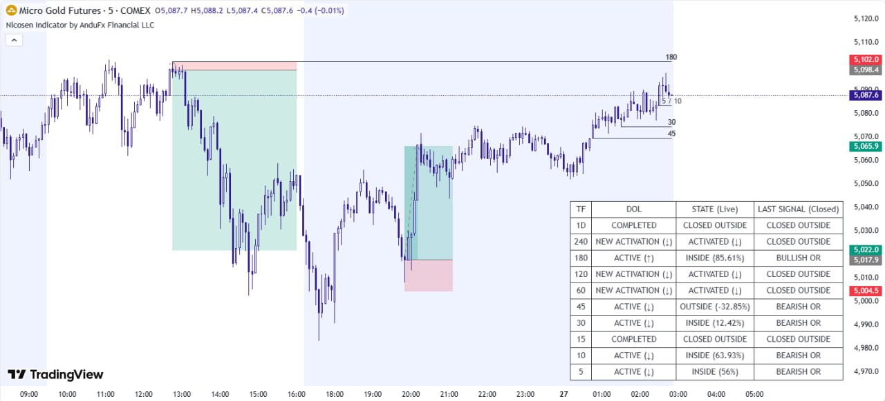

By AnduFx Financial LLC
Maximiza tu potencial de trading con señales precisas y análisis técnico avanzado. El indicador que eligen los traders profesionales.
Luego el precio aumenta a $62.49
Suscripción mensual • Cancela cuando quieras
Conoce los conceptos básicos del Indicador NicoSen
Aprende a dominar cada función del indicador paso a paso
Configuración
Paso a paso
Señales
Interpretación
Estrategias
Aplicación práctica
Funciona en todas las temporalidades: desde M5 para scalping hasta gráficos semanales
Ajusta parámetros y alertas según tu estrategia de trading personalizada
Ideal para traders intradía y scalpers que buscan entradas rápidas y precisas
NicoSen se adapta a tu estilo: Ya seas scalper operando en M5, trader intradía en M15-H1, o swing trader en temporalidades mayores. El indicador te proporciona señales claras y precisas optimizadas para cada temporalidad.
Rangos de Operación Inteligentes: Los rangos se marcan y desmarcan en tiempo real automáticamente, permitiendo una correcta lectura del mercado e identificación de entradas de alta calidad sin ruido innecesario.
Monitorea todas las temporalidades simultáneamente y obtén información instantánea sobre las condiciones del mercado en M5, M15, H1, H4, D1 y más

Señales en Vivo
Notificaciones instantáneas
Todas las Temporalidades
Vista integral
Análisis Inteligente
Información impulsada por IA
Relaciones Riesgo-Recompensa Óptimas: El indicador está diseñado para ayudarte a identificar operaciones con relaciones riesgo-recompensa de 1:2 o 1:3, maximizando tu potencial de ganancias mientras mantienes una gestión de riesgo disciplinada.
Compatibilidad Universal de Temporalidades: Funciona sin problemas en todas las temporalidades - desde gráficos semanales y diarios hasta H4, H1, M15, M5, o cualquier temporalidad que prefieras para tu estrategia de trading. Adapta el indicador a tu estilo de trading personal con total flexibilidad.
Herramientas diseñadas para traders que buscan resultados consistentes
Señales precisas en tiempo real para entradas y salidas óptimas del mercado
Compatible con todos los mercados: Forex, Crypto, Acciones, Índices y más
Alertas personalizables para nunca perder una oportunidad de trading
Prueba estrategias en tiempo real y modo replay para validar el rendimiento del indicador antes de operar en vivo
Resultados reales de personas reales
Únete a cientos de traders que ya están aprovechando el Indicador NicoSen